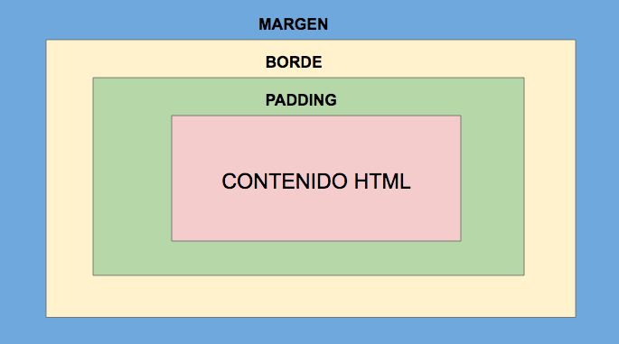

Hasta ahora vimos acerca de los elementos y estilos básicos para construir una página web. En esta lección, aprenderemos sobre las etiquetas "divs y spans", las cuales nos ayudan a estructurar mejor el sitio web.
Las etiquetas <div> </div> nos permiten dividir la página en secciones. Funcionan como contenedores o bloques a los cuales se les puede agregar estilos diferentes. El mismo nombre de div es la versión corta de la palabra división.
Por ejemplo, si querés construir el sitio web de una tienda de vestimenta femenina, podes dividir la página en varias secciones gracias a <div></div>, una de ellas puede tener fotos de las prendas, otra sección puede tener alguna descripción de la tienda, y en la última sección se pueden encontrar los números de contacto telefónicos de la tienda. Cada sección puede tener colores y otros estilos diferentes que los identifiquen.
Por otro lado, las etiquetas <span> </span> te permiten cambiar el estilo de las partes más pequeñas del sitio web, como por ejemplo una palabra específica. Lo único que tienes que hacer es rodear el texto que necesitas cambiar con las etiquetas de span para luego agregar o modificar el estilo con CSS.
En el editor tenemos un ejemplo de div y span con diferentes estilos. Juega con los estilos para ver como cambian.
See the Pen divs y span by eku (@eku) on CodePen.
Existen dos tipos de selectores que son muy útiles para agregar estilos en CSS: las clases (class) y los identificadores (id). Las clases sirven para seleccionar elementos que deberían tener el mismo estilo. Por ejemplo, imagina que tenemos tres secciones separadas por divs y queremos que dos de ellas tengan el mismo color verde, y una de ellas tenga un color diferente, por ejemplo, amarillo. Si utilizamos el elemento div para cambiar el estilo en CSS, todas las secciones representadas por div van a tener el mismo color. El cambio les afectará a todas las secciones por igual. Sin embargo, si discriminamos a las secciones, en este caso por color, agregando el selector class a las etiquetas div, entonces va a ser mucho más fácil hacer cambios en CSS.
En HTML,class siempre va seguido del signo = y un nombre descriptivo entre comillas.
<!DOCTYPE html>
<html>
<body>
<div class="rosado">Soy un div!</div>
<div class="negro">Soy otro div!</div>
</body>
</html>En CSS agregamos los estilos utilizando las clases. Para eso, debemos poner un punto (.) antes del nombre de la clase, y luego seguir con el procedimiento normal, es decir, definir los estilos dentro de las llaves.
.rosado {
background-color: pink;
}
.negro {
background-color: black;
}
Ahora, practiquemos un poco. En el panel de HTML tenemos tres secciones diferentes separados por divs. Dos de ellas tienen la clase "verde". Agrega una clase llamada "amarillo" a la sección del medio. Luego, en el panel de CSS agregá el nombre de la clase que acabas de poner en el HTML y los estilos, por ejemplo, background-color: "yellow". Por último, haz click en "Result" para ver el resultado.
Al igual que las clases, los identificadores sirven para agregar estilos a los elementos. Sin embargo, a diferencia de las clases, el mismo identificador se puede utilizar una sola vez en toda la página. Para asignar un identificador a un elemento HTML lo hacemos utilizando la palabra id seguida del signo = y un nombre entre comillas.
<!DOCTYPE html>
<html>
<body>
<div id="unico">Soy un div especial!</div>
</body>
</html>CSS reconoce a los identificadores con el signo #. Luego del signo numeral se coloca el nombre del identificador, seguido por las llaves y respectivos estilos.
#unico {
border-color: pink;
border-width: 2px;
border-style: dashed;
font-size: 15px;
}
En el panel CSS del editor, agrega estilos al id "row2". Haz click en "Result" para el ver el resultado final.
Existe un selector universal que nos ayuda a agregar los mismos estilos a toda la página. Este selector está representado por el simbolo * (asterisco). Por ejemplo, si queremos agregar un borde a todos los elementos de la página entonces recurrimos a CSS:
JS Bin on jsbin.comAhora todos los elementos de la página tienen un borde rojo. Como ya te habrás dado cuenta, todos los elementos están dentro de unas cajas. A esto se le llama el modelo de la caja de CSS.
El modelo de la caja está representado por el siguiente gráfico:
Cada elemento en HTML está compuesto por cuatro partes: contenido, padding, borde, margen. Lo que se encuentra en el medio es el contenido, osea el texto o la imágen. Entre el contenido y el borde, se encuentra el espacio llamado padding. Por último, el margen es el espacio que rodea a todo el elemento y está ubicado después del borde. El margen es el espacio que separa al elemento de otro elemento.
Gracias a CSS podemos modificar el borde, padding y margen. Por ejemplo, podemos aumentar el ancho del borde, el espacio entre cada elemento, o el espacio entre el borde y el contenido. El ejemplo de abajo nos muestra como modificar los cuatro lados de la caja
#unico {
margin: 15px;
padding: 20px;
}
Si no quieres aumentar el margen o padding de los cuatro lados al mismo tiempo, entonces podemos especificar sólo el lado que queramos. Por ejemplo, margin-top se refiere al margen de arriba de la caja, margin-right, indica el margen derecho, margin-bottom es el margen ubicado abajo de la caja, y por último, margin-left, a la izquierda de la caja. Lo mismo se aplica al padding.
#unico {
margin-top: 15px;
padding-bottom: 20px;
}
Por ultimo, si necesitas que cada lado de la caja tenga un margen o padding diferente, esto lo podés definir en una sóla línea de código como en el ejemplo de abajo. Ten en cuenta que la primera medida (10px) se refiere al padding-top de la caja, y luego avanzás de acuerdo al sentido de las manecillas del reloj. Es decir, padding-top, padding-right, padding-bottom y padding-left.
div {
padding: 10px 15px 20px 5px;
margin: 5px 12px 30px 5px;
}
En el editor, agrega márgen y padding al div. Ejemplo: margin: 10px; padding: 20px. Te diste cuenta del cambio? Puedes aumentar el número de pixeles para seguir probando.